fastmath.kernel
Various kernel functions.
- RBF (double -> double functions)
- vector kernels (vector x vector -> double function; may be positive definite, conditional positive definite, positive semi-definite, mercer)
- density estimation
- some kernel operations
Categories
Other vars: approx cauchy-density-kernel cosine-density-kernel cpd->pd epanechnikov-density-kernel exp fields gaussian-density-kernel kernel kernel->rbf kernel-density kernel-density-ci kernel-density-list kernels-list laplace-density-kernel logistic-density-kernel mult quartic-density-kernel rbf rbf->kernel rbf-list scale sigmoid-density-kernel silverman-density-kernel smile-mercer smile-rbf triangular-density-kernel tricube-density-kernel triweight-density-kernel uniform-density-kernel wadd wigner-density-kernel
approx
(approx k precision)(approx k)Kernel wrapper. Round value returned by kernel using fastmath.core/approx function.
Examples
Usage
(let [ak (approx (kernel :gaussian))] (ak [1 2] [3 4]))
;;=> 0.02
(let [ak (approx (kernel :gaussian) 6)] (ak [1 2] [3 4]))
;;=> 0.018316Plot of
:gaussiankernel pproximated to one decimal place.
cpd->pd
(cpd->pd k)Convert conditionally positive definite kernel into positive definite.
Formula is based on this SO answer. x0 is equal 0.
Doesn’t work well.
Examples
Usage
(let [k (kernel :circular) pd (cpd->pd k)] (pd [0.0 -0.1] [0.2 0.4]))
;;=> 0.013011305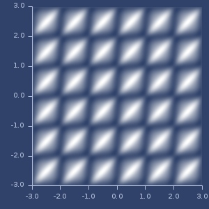Plot of
:periodickernel converted withcpd->pdfunction.
exp
(exp k)(exp k t)Kernel wraper. exp of kernel k with optional scaling value t.
Examples
Usage
(let [k (exp (kernel :laplacian))] (k [1 2] [3 4]))
;;=> 1.060887420006057Exp with scale=0.5
(let [k (exp (kernel :laplacian) 0.5)] (k [1 2] [3 4]))
;;=> 1.0299938931887205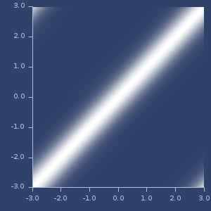Plot of exp of
:dirichletkernel with scaling=5.0
fields
(fields k f)(fields k f1 f2)Kernel wrapper. Apply vector field for each input before applying kernel function.
Examples
Usage
(let [k (kernel :laplacian)
fld (fields/field :horseshoe)
kf (fields k fld)]
(kf (v/vec2 2 3) (v/vec2 1 2)))
;;=> 0.21437946979352915kernel
multimethod
Crated vector kernel.
Kernels can be Mercer, positive definite, conditional positive definite, positive semi-definite or other.
Optional parameters:
For :gaussian, :exponential, :laplacian, :rational-quadratic, :multiquadratic, :inverse-multiquadratic, :circular, :spherical, :wave, :power, :log, :cauchy, :generalized-t-student, :hyperbolic-secant, :thin-plate, :mattern-12, :mattern-32, :mattern-52 and ::hyperbolic-secant you can provide scaling parameter and distance (see fastmath.distance, default is euclidean).
Others:
:linear-alpha, scaling parameter:polynomial-alpha(scaling),c(shift) andd(power):anova-sigma(scaling),kandd(power):hyperbolic-tangent-alpha(scaling),c(shift):periodic-sigma(scaling),periodicityanddistance:bessel-sigma(scaling),nandv(power factors) anddistance:generalized-histogram-alphaandbeta(power factors):dirichlet-N:pearson-sigma(scaling) andomega(power)
Additionally there are two special kernels build from funcitons:
:scalar-functions- provide one or two double->double functions:variance-function- provide any variance function (smooth, vector->double type)
The rest of the kernels do not require parameters.
Examples
Usage
(let [k (kernel :gaussian)] (k [1 2 3 4] [-1 2 3 5]))
;;=> 0.08208499862389877
(let [k (kernel :gaussian 1.0 d/chebyshev)] (k [1 2 3 4] [-1 2 3 5]))
;;=> 0.1353352832366127
(let [k (kernel :thin-plate)] (k [1 2 3 4] [-1 2 3 5]))
;;=> 4.023594781085252
(let [k (kernel :mattern-52 0.5)] (k [1 2 3 4] [-1 2 3 5]))
;;=> 0.0020127302194701585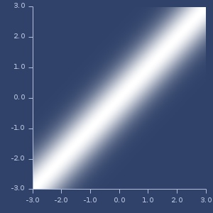Plot of anova
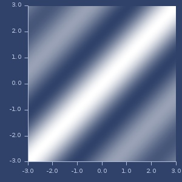Plot of bessel
Plot of cauchy

Plot of chi-square-cpd
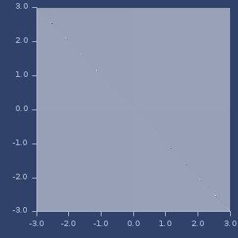Plot of chi-square-pd
Plot of circular
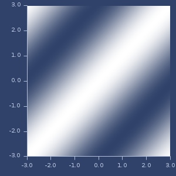Plot of dirichlet
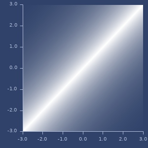Plot of exponential
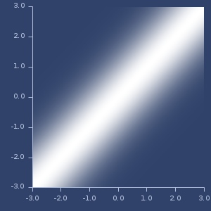Plot of gaussian
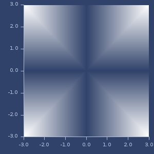Plot of generalized-histogram
Plot of generalized-t-student
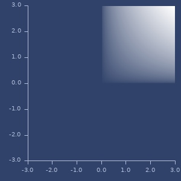Plot of hellinger
Plot of histogram

Plot of hyperbolic-secant
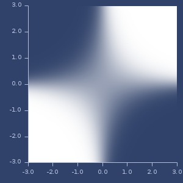Plot of hyperbolic-tangent
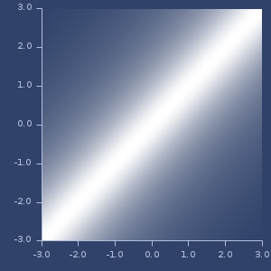Plot of inverse-multiquadratic
Plot of laplacian
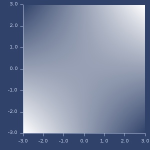Plot of linear
Plot of log

Plot of mattern-12

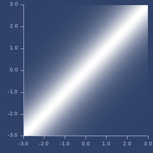Plot of mattern-32
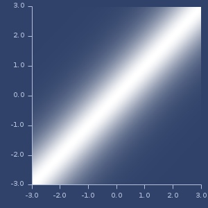Plot of mattern-52
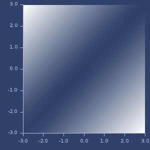Plot of multiquadratic
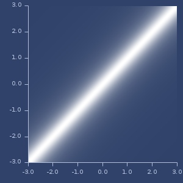Plot of pearson
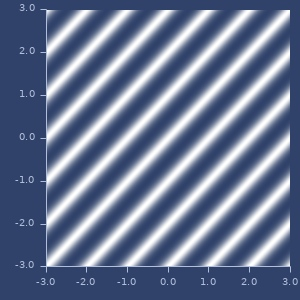Plot of periodic
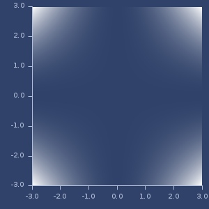Plot of polynomial
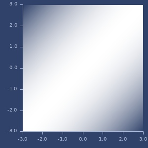Plot of power
Plot of rational-quadratic
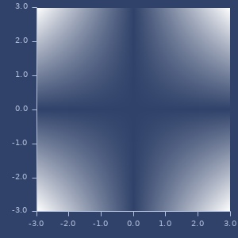Plot of scalar-functions
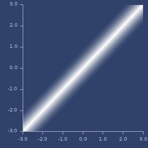Plot of spherical
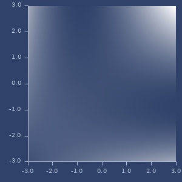Plot of spline
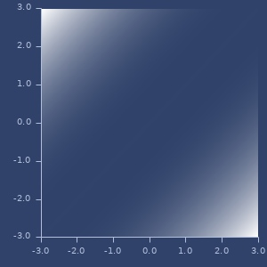Plot of thin-plate
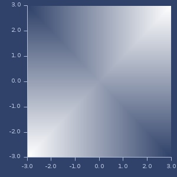Plot of variance-function
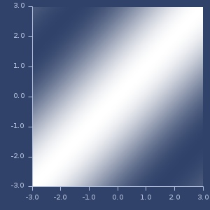Plot of wave
kernel->rbf
(kernel->rbf k)(kernel->rbf k center)Convert vector kernel to RBF kernel. center is fixed y vector (default contains EPSILON values).
Examples
Usage
(let [k (kernel :mattern-52) r (kernel->rbf k)] (r 0.234))
;;=> 0.9567485662415672kernel-density
multimethod
Create kernel density estimator.
Parameters:
- kernel name, see kernel-density-list.
- sequence of data values
- optional: bandwidth (by default, bandwidth is estimated using nrd method)
Examples
Usage
(let [k (kernel-density :epanechnikov (repeatedly 1000 rand))] (k 0.5))
;;=> 1.117963173775483
(let [k (kernel-density :gaussian (repeatedly 1000 rand) 2)] (k 0.5))
;;=> 0.1974205108544589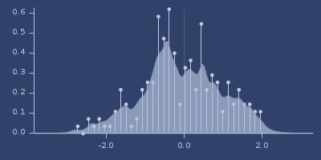Plot of cauchy
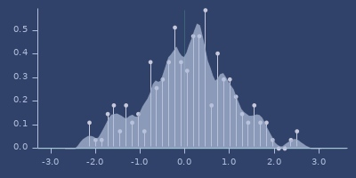Plot of cosine
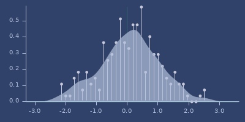Plot of default
Plot of epanechnikov
Plot of gaussian
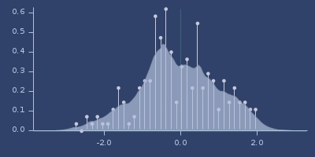Plot of laplace
Plot of logistic

Plot of quartic
Plot of sigmoid
Plot of silverman

Plot of smile
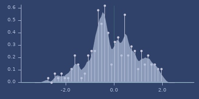Plot of triangular
Plot of tricube

Plot of triweight

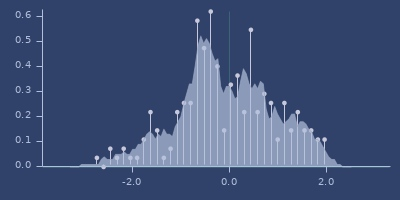Plot of uniform
Plot of wigner
kernel-density-ci
(kernel-density-ci method data)(kernel-density-ci method data bandwidth)(kernel-density-ci method data bandwidth alpha)Create function which returns confidence intervals for given kde method.
Check 6.1.5 http://sfb649.wiwi.hu-berlin.de/fedc_homepage/xplore/tutorials/xlghtmlnode33.html
Parameters:
method- kernel namedata- sequence of data valuesbandwidthalpha- confidence level parameter
Returns three values: density, lower confidence, upper confidence
Examples
Usage
(let [k (kernel-density-ci :epanechnikov (repeatedly 1000 rand))]
(k 0.5))
;;=> [1.0980476125749297 0.9158708086785848 1.2802244164712744]
(let [k (kernel-density-ci :gaussian (repeatedly 1000 rand) 2)] (k 0.5))
;;=> [0.19738297405101762 0.18704142797234344 0.2077245201296918]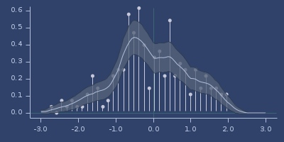Kernel density with confidence intervals
kernel-density-list
Examples
List of density kernels
kernel-density-list
;;=> (:cauchy :cosine
;;=> :default :epanechnikov
;;=> :gaussian :laplace
;;=> :logistic :quartic
;;=> :sigmoid :silverman
;;=> :smile :triangular
;;=> :tricube :triweight
;;=> :uniform :wigner)kernels-list
Examples
List of vector kernels
kernels-list
;;=> (:anova
;;=> :bessel
;;=> :cauchy :chi-square-cpd
;;=> :chi-square-pd :circular
;;=> :dirichlet :exponential
;;=> :gaussian :generalized-histogram
;;=> :generalized-t-student :hellinger
;;=> :histogram :hyperbolic-secant
;;=> :hyperbolic-tangent :inverse-multiquadratic
;;=> :laplacian :linear
;;=> :log :mattern-12
;;=> :mattern-32 :mattern-52
;;=> :multiquadratic :pearson
;;=> :periodic :polynomial
;;=> :power :rational-quadratic
;;=> :scalar-functions :spherical
;;=> :spline :thin-plate
;;=> :variance-function :wave)mult
(mult k1)(mult k1 k2)(mult k1 k2 k3)(mult k1 k2 k3 & r)Kernel wrapper. Multiply two or more kernels.
Examples
Usage
(let [k1 (kernel :laplacian)
k2 (kernel :periodic)
res (mult k1 k2)]
(res [1 2 3 4] [-1 2 3 5]))
;;=> 0.042910348739392076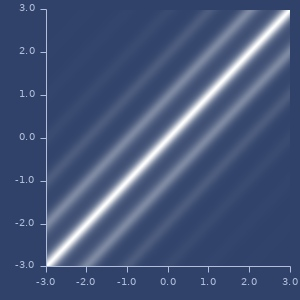Product of two kernels
rbf
multimethod
RBF kernel creator. RBF is double->double function.
Parameters:
All kernels accept scale parameter (as last parameter).
Following kernels also accept beta: :multiquadratic, :inverse-multiquadratic, :truncated-power, :radial-powers and :thin-plate.
Examples
Usage
(let [k (rbf :gaussian)] (k 1))
;;=> 0.36787944117144233
(let [k (rbf :gaussian 0.5)] (k 1))
;;=> 0.01831563888873418Thin-plate RBF with
beta=2andscale=1
(let [k (rbf :thin-plate 2.0 1.0)] (k 0.5))
;;=> -0.04332169878499659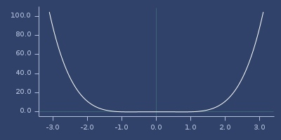Plot of above RBF
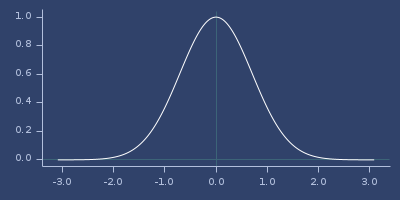Plot of gaussian
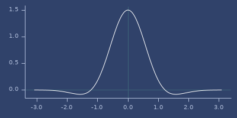Plot of gaussians-laguerre-11
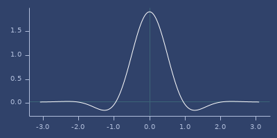Plot of gaussians-laguerre-12
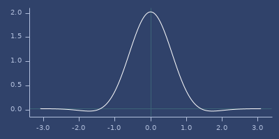Plot of gaussians-laguerre-21
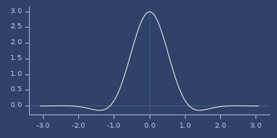Plot of gaussians-laguerre-22
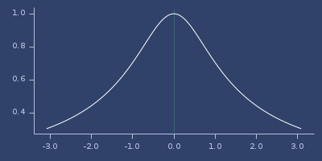Plot of inverse-multiquadratic
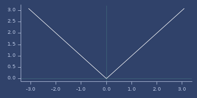Plot of linear
Plot of mattern-c0

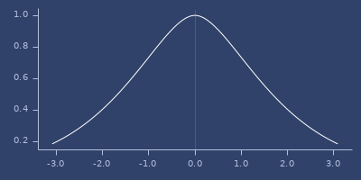Plot of mattern-c2
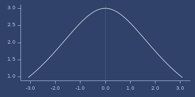Plot of mattern-c4
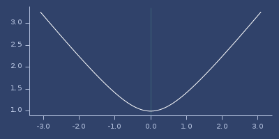Plot of multiquadratic
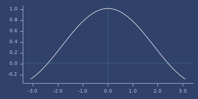Plot of poisson-2
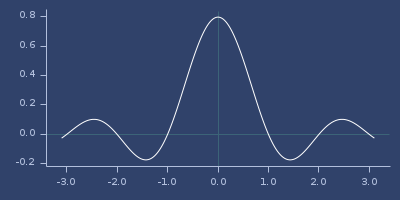Plot of poisson-3
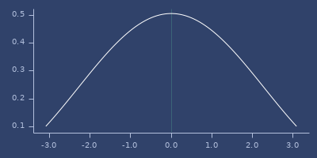Plot of poisson-4
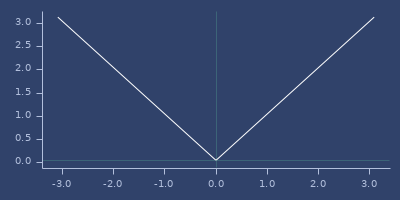Plot of radial-powers
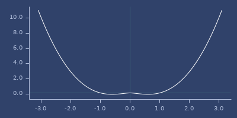Plot of thin-plate
Plot of truncated-power

Plot of wendland-10
Plot of wendland-20
Plot of wendland-21
Plot of wendland-30
Plot of wendland-31
Plot of wendland-32
Plot of wendland-41
Plot of wendland-42
Plot of wendland-52
Plot of wendland-53
Plot of whittaker-02
Plot of whittaker-03
Plot of whittaker-12
Plot of whittaker-13
Plot of wu-00
Plot of wu-10
Plot of wu-11
Plot of wu-20
Plot of wu-21
Plot of wu-22
Plot of wu-30
Plot of wu-31
Plot of wu-32
Plot of wu-33
rbf->kernel
(rbf->kernel rbf-kernel)(rbf->kernel rbf-kernel distance)Treat RBF kernel as vector kernel using distance function (default euclidean.
Examples
Usage
(let [r (rbf :mattern-c4) k (rbf->kernel r)] (k [1 2 3 4] [-1 2 3 5]))
;;=> 1.5719823264954609rbf-list
Examples
List of RBF kernels
rbf-list
;;=> (:gaussian
;;=> :gaussians-laguerre-11 :gaussians-laguerre-12
;;=> :gaussians-laguerre-21 :gaussians-laguerre-22
;;=> :inverse-multiquadratic :linear
;;=> :mattern-c0 :mattern-c2
;;=> :mattern-c4 :multiquadratic
;;=> :poisson-2 :poisson-3
;;=> :poisson-4 :radial-powers
;;=> :thin-plate :truncated-power
;;=> :wendland-10 :wendland-20
;;=> :wendland-21 :wendland-30
;;=> :wendland-31 :wendland-32
;;=> :wendland-41 :wendland-42
;;=> :wendland-52 :wendland-53
;;=> :whittaker-02 :whittaker-03
;;=> :whittaker-12 :whittaker-13
;;=> :wu-00 :wu-10
;;=> :wu-11 :wu-20
;;=> :wu-21 :wu-22
;;=> :wu-30 :wu-31
;;=> :wu-32 :wu-33)scale
(scale k scale)Kernel wrapper. Scale kernel result.
Examples
Usage
(let [k (kernel :laplacian)
sk (scale k 2.0)]
{:kernel (k [1 2 3 4] [-1 2 3 5]),
:scaled-kernel (sk [1 2 3 4] [-1 2 3 5])})
;;=> {:kernel 0.10687792566038574, :scaled-kernel 0.2137558513207715}smile-mercer
(smile-mercer k)Create Smile Mercer Kernel object
Used to pass to Smile constructors/functions.
Examples
Usage
(smile-mercer (kernel :mattern-52))
;;=> fastmath.kernel$smile_mercer$reify__19969@1c4f7000smile-rbf
(smile-rbf rbf-fn)Create RBF Smile object.
Used to pass to Smile constructors/functions.
Examples
Usage
(smile-rbf (rbf :mattern-c2))
;;=> fastmath.kernel$smile_rbf$reify__19707@49cfb519wadd
(wadd kernels)(wadd weights kernels)Kernel wrapper. Add kernels (weighted).
Examples
Usage
(let [k1 (kernel :laplacian)
k2 (kernel :periodic)
res (wadd [k1 k2])]
(res [1 2 3 4] [-1 2 3 5]))
;;=> 0.5083672741320578Weighted sum
(let [k1 (kernel :laplacian)
k2 (kernel :periodic)
res (wadd [0.2 0.8] [k1 k2])]
(res [1 2 3 4] [-1 2 3 5]))
;;=> 0.3425670639094149Weighted sum of two kernels